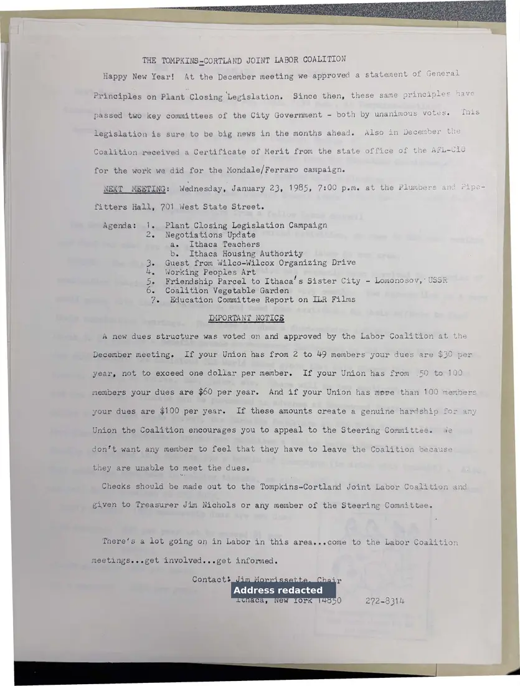

Letter, 1 page
New Year letter on the plant closing principles
[January 1985]Date inferred
The coalition reports that in December it approved a statement of general principles on plant closing legislation, and announces a January 23, 1985 meeting on the campaign, the Ithaca Journal, the Ithaca teachers, and other issues.
Download or cite this itemPages


(open zoom view)A personal home address has been covered on this page.
Read the page text (machine-read, mostly readable)
This text was generated automatically from the photograph and has not been corrected. The image is the authoritative record.
THE TOMPKINS-CORTLAND JOINT LABOR COALITION Happy New Year! At the December meeting we approved a statement of General Principles on Plant Closing Legislation. Since then, these same principles have | passed two key committees of the City Government - both by unanimous votes. This legislation is sure to be big news in the months ahead. Also in December the Coalition received a Certificate of Merit from the state office of the AFL-Clu for the work we did for the Mondale/Ferraro campaign. NEXT MEETING: Wednesday, January 23, 1985, 7:00 pem. at the Plumbers and ripe- fitters Hall, 701 West State Street. Agenda: - Plant Closing Legislation Campaign - Negotiations Update ae Ithaca Teachers b. Ithaca Housing Authority 3. Guest from Wilco-Wilcox Organizing Drive 4, Working Peoples Art 5- Friendship Parcel to Ithaca’s Sister City - Lomonosov,’ USSR 6. Coalition Vegetable Garden 7. Education Committee Report on ILR Films IMPORTANT NOTICE A new dues structure was voted on and approved by the Labor Coalition at the December meeting. If your Union has from 2 to 49 members your dues are $30 per year, not to exceed one doliar per member. If your Union has from 50 to 100 members your dues are $60 per year. And if your Union has mpre than 100 membe your dues are $100 per year. If these amounts create a genuine hardship for any Union the Coalition encourages you to appeal to the Steering Committee. Ae don’t want any member to feel that they have to leave the Coalition because a they are unable to meet the dues. ES Checks should be made out to the Tompkins-Cortland Joint Labor Coalition and o. given to Treasurer Jim Nichols or any member of the Steering Committee. 8 There‘s a lot going on in Labor in this area.e..come to the Labor Coalition . cal meetings...eget involved...get informed. ri. Contacts bee 272-8314 ee
See something wrong, or recognize a person or event? Send a correction. If you hold rights in this item or think it should not be public, write to the same address.